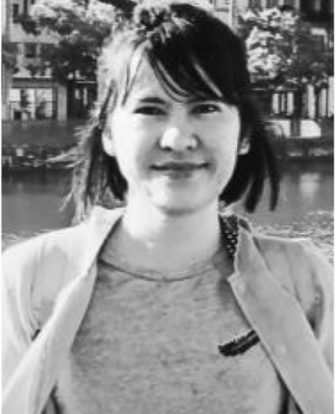

Kristina P. Sinaga
PhD in Applied Mathematics
krissy25.ml@gmail.com
[Google Scholar]
[GitHub]
[DBLP]
Welcome to Sinaga's Homepage
Bio
Kristina received her PhD from the Applied Mathematics Department at Chung Yuan Christian University in 2020, where she was advised by Prof. Miin-Shen Yang. Her main research interests lie at the intersection of clustering and pattern recognition. She also has a strong side interest in artificial intelligence. After PhD, she worked as a lecturer in the graduate program of information management system Binus University, Indonesia for 1.6 years. During 1.6 years time, she has taught Business Intelligence and Analytics (Graduate Program), Calculus and Linear algebra (Undergraduate Program). Prior to that, she was an undergraduate and master student from the Mathematics Department at University of Sumatera Utara, Indonesia.

Research Interests:
- Data analysis;
- Multi-view/modality learning;
- Pattern recognition;
- Feature reduction;
- Clustering.